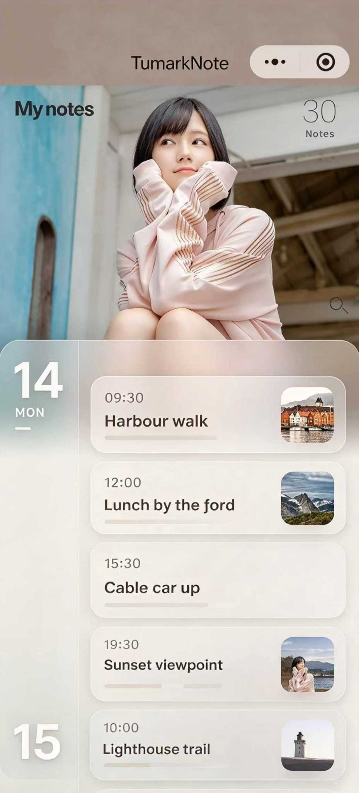

--fs-tiny 21rpx → --fs-micro 18rpx（9px），标题仍 --fs-body 28rpx（14px），
两档比从 1 : 1.33 拉到 1 : 1.56；来源同时把颜色压深一档（rgba(35,37,44,.55) → .68）
免得字一小的对比度跟着掉下去；分类行 --fs-meta 24rpx → --fs-tiny 21rpx，
只压合一之后那几屏——现网对照那一格是尺子，仍留 24rpx。app.wxss＋pages/index/index.wxss 现读，
屏上每句中文从 utils/i18n.js 现读，来源那六串从 pages/index/index.js 的
SOURCE_TYPE_KEYS 现读，参考图那几段比例是从他给的 JPG 量的（docs/工具/量-参考图-比例.py）。
标题、摘要、来源与标识是示意数据，照片位用 CSS 渐变占位、不放真人图。
8a909cd 里，要回头看随时抽得出来。:root（--fs-body:28rpx），
而 rpx 在 Chrome 不是合法长度 ⇒ font-size:var(--fs-body) 摊开就整条静默作废、退回继承的 16px，
两条 box-shadow 同理变 none。所以上一版里来源／标题／分类／日期其实是同一个大小，
您这句"来源的字体太大"是完全准确的实测，不是我改慢了一档。
现在令牌进 CSS 前一律换成 px，并加了两道闸：出 HTML 前扫 <style> 的声明、还有一个 rpx 就抛；
探针 docs/工具/验-字号档位与对比.js 逐屏比"令牌值／2 是否等于屏上算出来的 px"（九屏全过）。

WtsjMind 100 与 32px、圆角与阴影吃 40rpx 与 0 12rpx 28rpx rgba(18, 20, 26, 0.16)。has_active_share（今天已经在下发，客户端零消费者，这一枚是它第一个用户）；② ▢ 出过卡片＝cardCloud.hasCard(id)，读内存那份全量名单，零请求；③ 🔒 私密＝客户端 isPrivate(分类名)（index.js:326；⚠ 列表响应里没有 is_private，这一枚靠分类名判，privKnown 那一档是"不知道"不是"不私密"）；④ ♥ 被转存＝今天没有这一栏，但数得出来：notes.imported_from 里钉着 share_token／source_note_id，服务端按它数一次就知道"我分享出去的那张码被人存了几回"——这一枚是未来，要一条后端活，画在这里只为看它在轨上占不占得住。一枚都没有的那一行只留那条线（不然这一档看着像漏画）。6 支，全部现读 index.js 的 SOURCE_TYPE_KEYS）source_type 本来就在列表响应的白名单里（NOTE_BRIEF_FIELDS 九栏之一），所以这一行小字零后端代价。⚠ 表外值的兜底：查不到键就把英文原文写上屏——这条站长 10-02 撞过一次，所以新加来源那一支必须同时进这张表。「私密」不在这一行里：它不是来源，是标识轨那一枚锁（同一篇的来源仍是它原本那一种）。--fs-tiny＝21rpx 压到 --fs-micro＝18rpx（＝9px），与标题 --fs-body＝28rpx（＝14px）拉开一档；英文那几串最长的是 WeChat Article；标题可写宽实测 216px（量法 docs/工具/验-英文挤不挤.js），灌 78 字符之后右端配图与轨的落点一个数没动 ⇒ 省略号只吃标题自己。noCards＝「还没有生成过卡片」这一句在屏上不再有人念——留着还是删，等他一句。